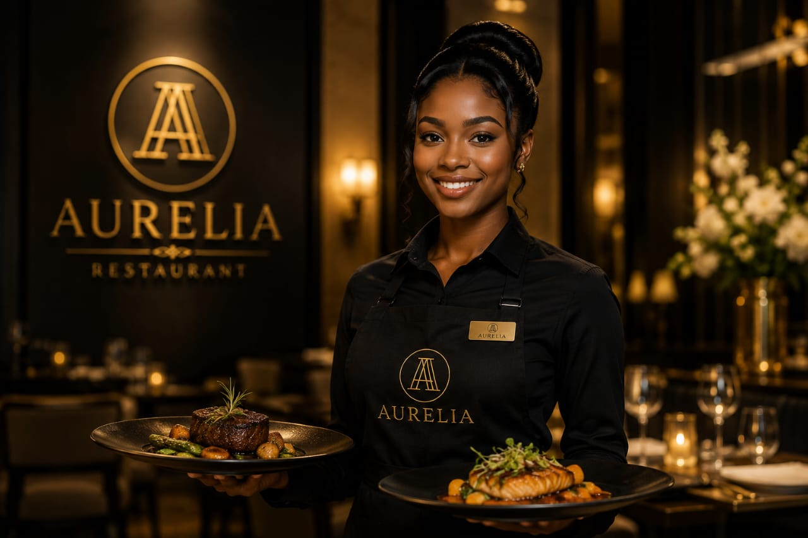

Aurelia — Luxury Restaurant Branding
Role: Brand & UI Designer | Tools: Canva

The brief
Create a visual identity for a fine-dining restaurant that communicates exclusivity and warmth without feeling cold or overly corporate.
Process
- Researched luxury/fine-dining brand conventions — muted palettes, serif typography, generous whitespace — to ground the direction
- Designed the logo, then extended it across brand touchpoints such as business card, menu, social templates, signage, etc.
- Ensured consistency across every asset so the brand feels cohesive whether someone sees it on a menu or Instagram
Key Decisions
Chose a monogram-based mark alongside a wordmark, so the brand works at both large and small sizes
Outcome
A complete brand identity system — logo, color palette, typography, and collateral pieces — ready for real-world application.
View Full Gallery on Behance